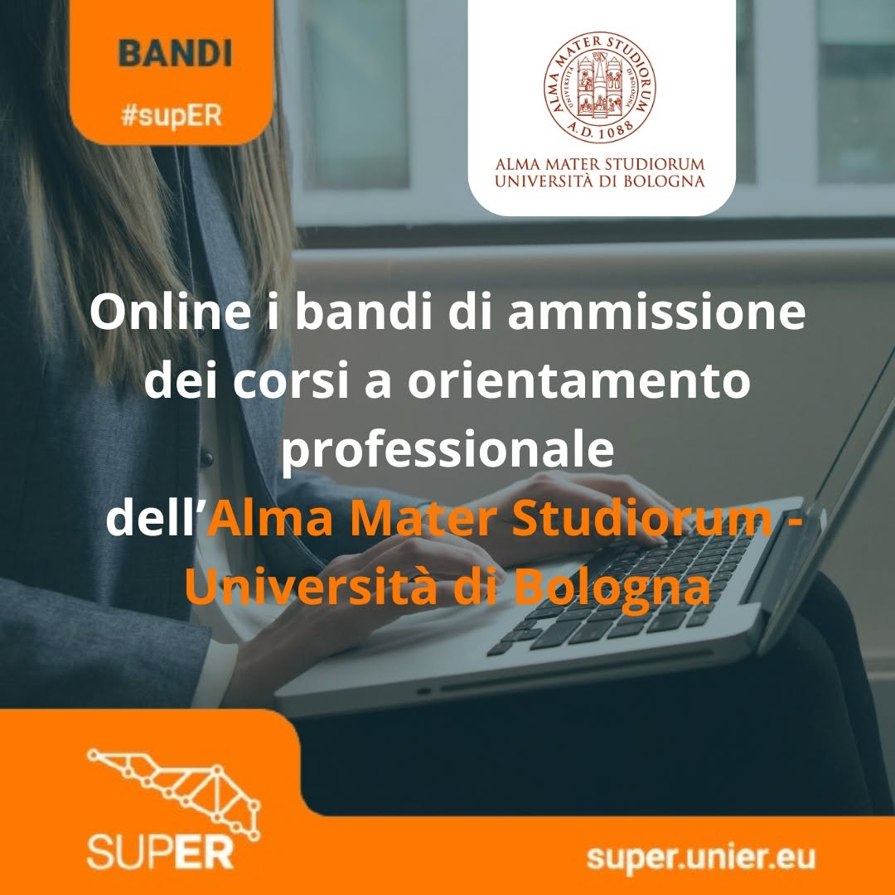
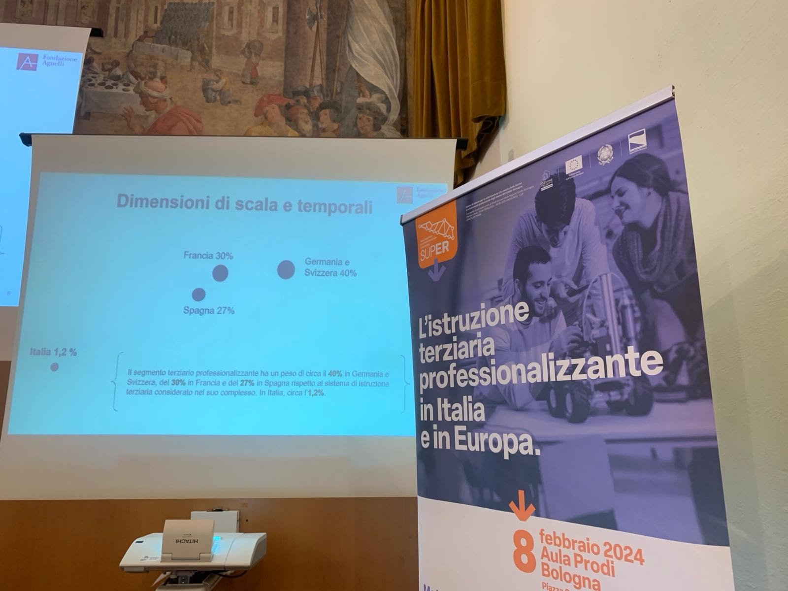
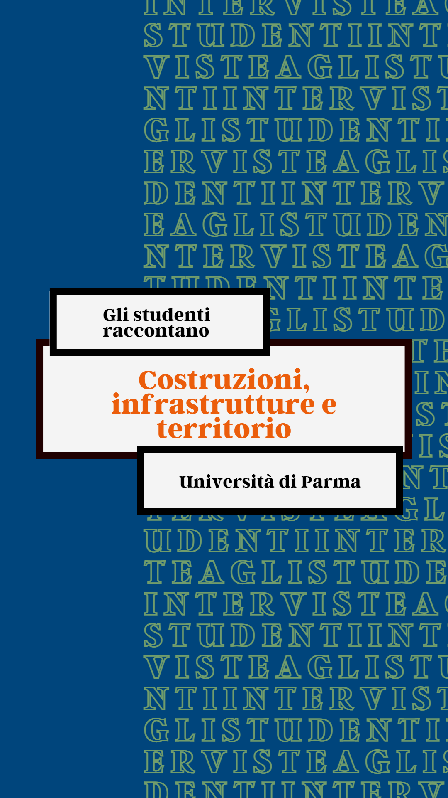

Comunicazione digitale & content
Giulia Agnoletti
Digital Communication | Copywriter | Social Media Manager | Content Creation
Chi sono
"Traduco" concetti complessi in storie chiare, ingaggianti e adatte al target di riferimento. Che si tratti di alleggerire il burocratese di un ente pubblico, dare voce al tono di voce di un brand o creare contenuti digital per un'agenzia, mi muovo facilmente linguaggi differenti.
Nel mio lavoro unisco capacità di scrittura, progettazione dei contenuti, attenzione al contesto e sensibilità verso gli aspetti visivi della comunicazione.
Dalla Content Strategy multicanale all'Account Management tra clienti e team creativi, fino allo sviluppo di Piani Editoriali, Copywriting e contenuti visual veloci con Canva e CapCut: il mio obiettivo è far sì che ogni progetto trovi la parola e il canale giusto per farsi ascoltare.
Progetti
-
Comune di Castenaso
2026Kitchen
Gestione e produzione di contenuti per sito, social e newsletter.
Mi sono occupata della comunicazione digitale dell’ente, curando la diffusione e la valorizzazione delle informazioni rivolte alla cittadinanza. Ho gestito piani editoriali e realizzato contenuti per sito, social e newsletter, adattando linguaggio e registro ai diversi canali e alle diverse tipologie di comunicazione: dagli eventi sul territorio agli avvisi e alle informazioni di servizio. Ho inoltre curato la realizzazione di contenuti visual in Canva e il coordinamento operativo tra amministrazione e team creativo.

CONTENUTO INFORMAZIONE DI SERVIZIO Aperte le domande per accedere ai contributi dedicati alle persone con disabilità grave (LINK). 
CONTENUTO EVENTO CULTURALE - Anche se agosto sta per finire, a Castenaso la voglia di stare insieme non va in vacanza! (LINK). 
CONTENUTO ALLERTA METEO - Allerta meteo arancione per temporali (LINK). -
ACER Bologna
2025-2026Redesign
Comunicazione digitale e produzione editoriale per i canali dell’ente
Collaboro alla comunicazione digitale di ACER Bologna, occupandomi della pianificazione e della realizzazione di contenuti per i diversi canali dell’ente. Scrivo copy per i social, curando chiarezza, tono di voce e adattamento dei contenuti ai diversi formati. Mi occupo inoltre del magazine online Abito Qui, per il quale scrivo e curo articoli dedicati a temi legati all’abitare. Completo le attività con la realizzazione di contenuti visual in Canva e il supporto alla comunicazione di iniziative e progetti dell’ente.
-
White paper "Superare i confini"
2025Fondazione SUPER
Redazione del white paper conclusivo del progetto europeo “Azione di Sistema”
Ho curato la redazione del white paper conclusivo di “Azione di Sistema”, progetto europeo finanziato da fondi europei, realizzato per documentarne attività, risultati e sviluppi. Mi sono occupata della revisione, organizzazione e strutturazione dei contenuti, trasformando i materiali prodotti durante il progetto in un documento organico e di facile consultazione. Ho inoltre coordinato i contenuti provenienti dai diversi partner coinvolti, assicurando coerenza e uniformità nella restituzione finale.
CLICK AL WHITE PAPER → -
Campagna elettorale Simona Lembi
2024Redesign
Campagna elettorale per le elezioni regionali dell’Emilia-Romagna
Ho supportato la campagna elettorale di Simona Lembi in occasione delle elezioni regionali dell’Emilia-Romagna del novembre 2024, occupandomi della produzione operativa dei contenuti per i social. Mi sono dedicata in particolare alla scrittura dei testi per i post social e alla realizzazione di contenuti video in tempo reale durante incontri, iniziative ed eventi della campagna. Ho curato direttamente la realizzazione e il montaggio di Reel attraverso CapCut, trasformando rapidamente i momenti della campagna in contenuti pronti per la pubblicazione sui social.
-
Fondazione SUPER
2023-2024Piave Digital Agency
Gestione delle relazioni e coordinamento dei progetti di comunicazione tra cliente, partner e team di lavoro.
Ho seguito i progetti di comunicazione di Fondazione Super occupandomi della relazione tra il cliente, Università, le aziende partner e il team di lavoro. Ho gestito il coordinamento operativo delle attività, facilitando il confronto tra i diversi interlocutori e assicurando continuità tra le esigenze del progetto e la loro realizzazione. Nella produzione dei contenuti video ho lavorato a stretto contatto con un videomaker professionista, occupandomi della direzione e del coordinamento della realizzazione dei video, dalla definizione delle esigenze alla gestione delle attività sul set.

INSERISCI-COPY-FOTO-1 
INSERISCI-COPY-FOTO-2 
INSERISCI-COPY-FOTO-3
Cosa faccio
- Social media management
- Content strategy
- Copywriting
- Comunicazione istituzionale
- Web content & SEO
- Canva & visual content
- Video editing — CapCut
- ADV base
- Comunicazione eventi